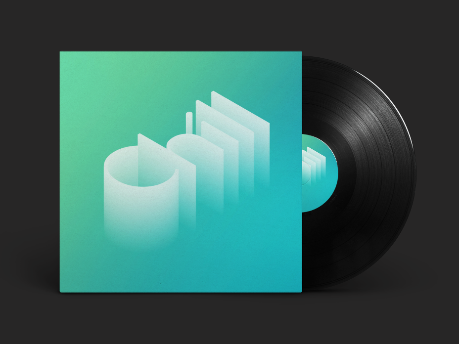
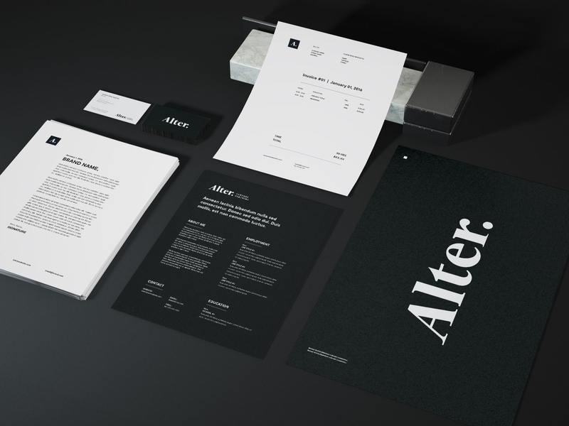
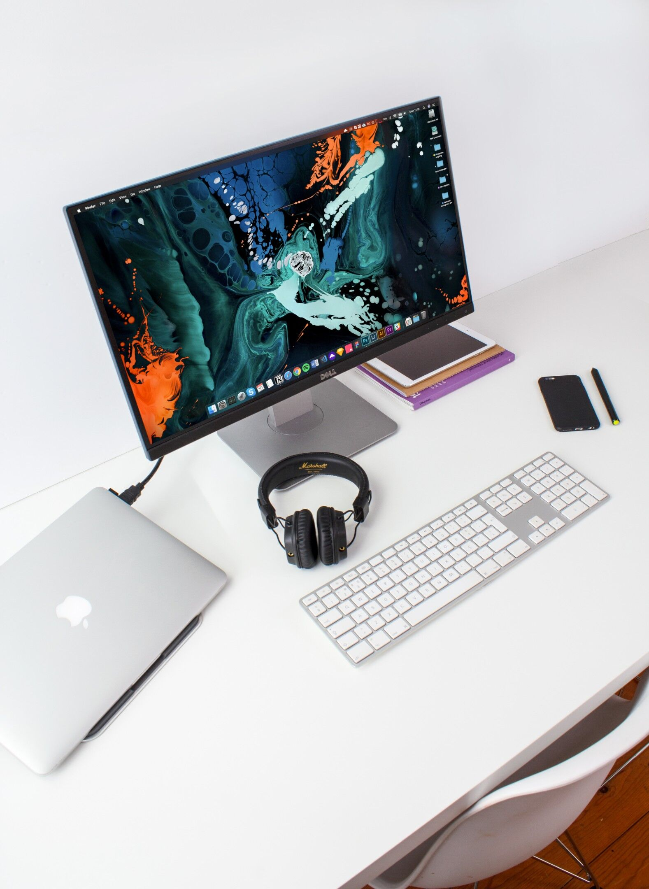
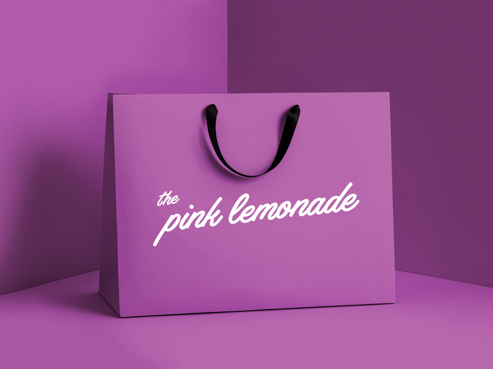

Stefan Vladimirov
Chief Creative at Swipes. Loves order and beauty. Always striving to achieve the
balance between function
and aesthetics.
Designer
Short intro
I’m Pedro Gil a freelancer designer and content creator living in Lisbon, Portugal I try to be a great person to work with and I always put all the passion I have for design into my works. I also have an obsession for the details, a strategic mindset and a simple and minimalistic taste.
What do you do for a living?
I had my first job as a Designer when I was 18 years old. So I'm now 30 so its like 12 years of design.
When did you find your passion for design?
My passion started at a very young age, with my admiration for the great masters of art and painting. I also used to fix computers and electronic gadget at a very young age. Some years latter I started to love all the graphic stuff and collecting a lot of graphic stuff. From personal cards, stickers, to flyers, packaging, book and cd covers, etc. Graffiti and street art also had a huge impact on my path with the drawing and typography part.
How long have you been doing design?
I started freelancing in college so i think I can see I'm ‘officially’ doing it for 6 years or so.
Describe the beginning of your day
What’s your workspace?
I'm little obsessed with having a clean, breathable workspace at home. Recently I've found that I create better when there is a high level of order, calm and minimal feelings around me. Create the right working environment helps a lot to keep me focused on the job in hand! My inner chaos needs outer calm! Recently I found this passion for minimal desk setup and interior design by accident. We never know what the future brings.
What’s your source of inspiration?
I pretty much find my inspiration in Music, books, and magazines and also in my dreams. Besides that, I also find great inspiration on platforms like behance and dribbble. What sparks my attention is the aesthetic balance, colors and energy of composition.
What works are you most proud of?
I almost never feel proud of my Works. Just on the day I delivery it. It always feels that it’s something left that could be improved. This feeling used to be one of my biggest complaints and stopped me to share my work for a while. Since a year ago, I’ve changed my thinking and that move changed my life as a designer. I followed the quote “Start now get perfect later” as a moto.
What are the tools you use in your day to day life?
Whiteboard is one of my best friends, I just love the power to draw something on a blank Wall. It helps me thinking visually and also share an idea with more people. I always carry around with me a black plain Moleskine for quick sketching and notes. I also use a great week planner. My main work station is a MacBook Pro 2015 my Camera a Canon 50D and my vertical mouse for my wrist pain.
Do you follow any set of principles for your work?
Be true to yourself, generous and kind. Push yourself to be a cool guy to work with. People love to have good energy around them If you provide that energy people will love to work with you.
What’s your favourite movie?
If I had to pick one it will be North by Northwest by Hitchcock.
What's your favourite book?
For non-technical books, is Siddhartha by Hermann Hesse.
What advice would you give to people that start out with design?
First, a designer should start learning, Visual Culture, Typography and Color theory. Second, Be patient, don’t hurry and don’t get bored, Things take time and you need to give it time. Most of the people give up at the end of the line, right before they succeed. Third, Don’t copy stuff from other people and don’t be scared to try new stuff. At the end of the day what makes you unique, is your taste and taste is something you can’t copy at all.
Have you ever thought of empowering your creative community in any way, shape or form?
I try to create useful content every day to share on my networks to empowering people. I found that people don’t care a lot about generic advice or your opinion about things. People care about the work you do, how you do it, how you evolve, how you learn, how you overcome challenges. That's what I try to share!
Meet Pedro on Social Media
Dribbble Instagram BehanceThank you for the interview, Pedro. Your work is beautiful and your interview is truly inspiring! Keep rocking! 🤘